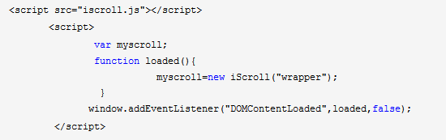

兼容性：移动端
查看演示
插件概要：
iScroll 4 这个版本完全重写了iScroll这个框架的原始代码。这个项目的产生完全是因为移动版webkit浏览器（诸如iPhone，iPad，Android 这些系统上广泛使用），
提供了一种本地化的方式来对一个限定了高度和宽度的元素的内容进行滑动。很不幸的是，这种情况下所有的web应用的页面就不能够包含具有position:absolute的头、页尾或者是一个内容可滚动的
中间区域。
然而，Android系统最新修订版已经可以支持这种功能了（尽管支持的力度还不是特别好），Apple公司似乎不太情愿将one-finger滑动事件运用到div元素上。
除了以前版本的iScroll的特性以外，iScroll 4还包括如下的特性：
（1）缩放（Pinch/Zoom）
（2）拉动刷新（Pull up/down to refresh）
（3）速度和性能提升
（4）精确捕捉元素
（5）自定义滚动条
友情提示：iScroll 4并不是iScroll 3的简易替代版本，API文档已经不一样了。同时考虑到此版本正处于测试期，一些API可能会有细微的变化。
最优的使用iScroll的结构如下所示：

在这个小例子中，ul标签将会被滚动。iScroll一定要与滚动内容外面的wrapper进行联系才会产生效果。
注意事项：
只有wrapper里的第一个子元素才可以滚动，如果你想要更多的元素可以滚动，那么你可以试试下面的这种写法：

iScroll必须在调用之前实例化，你可以在下面几种情况下对iScroll进行实例化：
（1）使用onDOMContentLoaded事件实现滚动
适用于滚动内容只包含文字、图片，并且所有的图片都有固定的尺寸

注意：myscroll这个变量是全局的，因此你可以在任何地方调用它
（2）使用onLoad事件实现滚动
因为DOMContentLoaded事件是载入DOM结构后就会被调用，所以在图片等元素未载入前可能无法确定滚动区域的长宽，此时可以使用onLoad事件来实现。

这种情况下iScroll会在页面资源（包括图片）加载完毕100ms之后得到初始化，这应该是一种比较安全的调用iScroll的方式。